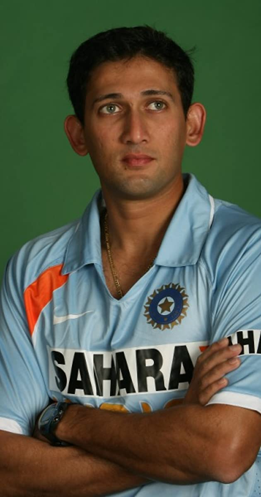
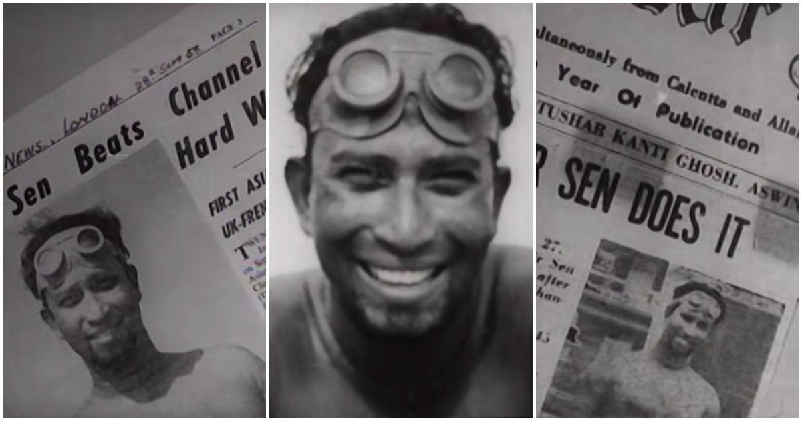
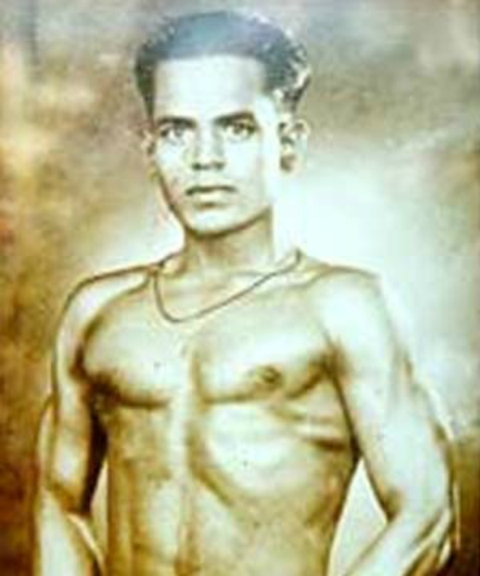

UNSUNG SPORTS HEROES
1) AJIT AGARKAR

Fastest 50 runs by an Indian player
Broke Dennis Lillee's record of fastest 50 wickets in ODIs.Later broken by Ajantha Mendis.
Broke Shaun Pollock's record of the quickest in terms of least number of matches played to take 200 wickets and complete 1000 runs.
2)Mihir Sen

Mihir Sen showed the world that Indians were capable of greatness by becoming the only man to swim across the oceans of five continents in one year.
Born into a family where his mother had to sell chicken eggs and milk to ensure he had a decent education, Sen earned a law degree before going to the United Kingdom for further studies. In the UK, he worked as a night porter at a railway station for some time to support himself.
He wanted to swim the oceans of five continents, starting with crossing the Palk Strait between India and Sri Lanka in 25 hours and 26 minutes on April 5-6, 1966. Subsequently, he went onto cross the Straits of Gibraltar (Europe to Africa) in a little over 8 hours on 24 August, the Bosphorus in 4 hours, the Dardanelles Straits (Gallipoli, Europe to Sedulbabir, Asia Minor) in nearly 14 hours and the entire length of the Panama Canal in 34 hours and 15 minutes across almost two days—from 29 to 31 October.
3)Khashaba Dadasaheb Jadhav

Born and raised in Goleshwar village in Satara district, Jadhav grew up in a wrestling family with his father Dadasaheb Jadhav, a renowned wrestler.
Four years later, however, in the Helsinki Olympics, he won the bronze medal in the Men’s Bantamweight and Freestyle category. Thus, he became Independent India’s first individual Olympic medal winner. Interestingly, it was the general public who funded his trip to Helsinki and paid for his wrestling kit.